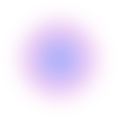
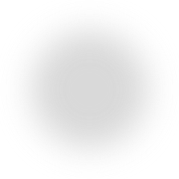
NINGBO LOCAL COMMUNITY
CAMPUS · UNNC
CHINESE
STUDENTS
SE ASIAN
Food Isla
STUDENTS
E. ASIAN
STUDENTS
EUROPEAN
STUDENTS
FACULTY
& STAFF
SCHOOL
DEPT.
NINGBO
WET MKT
LOCAL
RESIDENTS
FOOD
VENDORS
ningbo community
PARTNER
ORGS
CORE
STUDENTS
FACULTY / DEPT
CITY / LOCAL
NODE SIZE = INFLUENCE
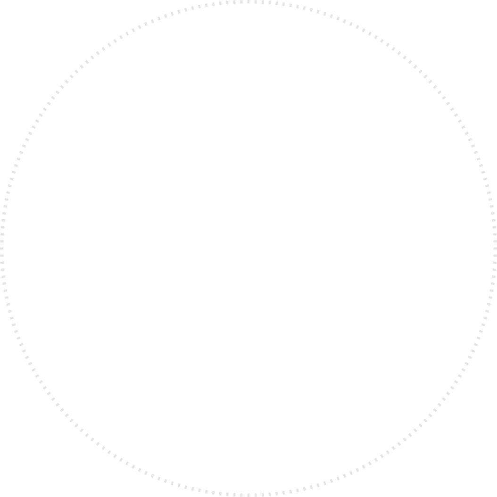
01
05
09
02
06
10
03
07
11
04
08
12
Activities
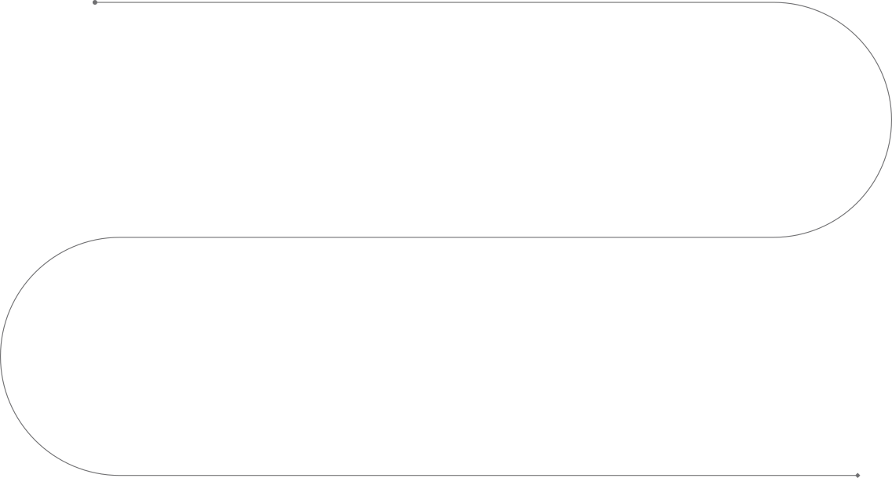
Workshop 001 —
Re-imagining Margherita
2025 UNNC Sustainability Week — Xuecai Rice Cake Making
Workshop 006 — Making Gelato and Focaccia
Popup Kitchen — Hood Pumpkin Festival
Workshop 007 — Between Mountain and Wild: Yunnan Dipping Sauce and Tabuluoda
Workshop 008 — Black Tea & Gingerbread
2025 UNNC Sustainability Week — Eco Food Cart
Dragon Boat Festival Special — Dawa Market Pop-up
Field Trip 002 — Farm to Table: A Three-Day Journey
Field Trip 001 —
Tracing the Memory of Ningbo Community through Food
Workshop 003 —
Sweet, but not too sweet: Baklava
Workshop 004 — Making, and Becoming a Fermented Plant
Food Isla grew out of a specific observation on campus: in a highly internationalised university environment, cross-cultural exchange tends to happen in classrooms and formal settings, while food — as a daily practice shared by everyone — is rarely taken seriously as a medium for community-building. The founding impulse was to return food to its rightful place: not as a prop for cultural display, but as a meaningful factor in shaping a sense of belonging. UNNC, as a glocal campus, is itself a site where the tension between international culture and the local Ningbo community is most concentrated. Food Isla chooses to work within that tension rather than sidestep it.
about
food isla
My Role
As co-founder of Food Isla, my core responsibility has been to maintain a balance between critical discourse and tangible lived experience. I lead the conceptual design of events, related product development, and project coordination — from an outdoor food cart experience serving 300 staff and students during Sustainability Week, to a spatial redesign proposal developed in collaboration with a local Ningbo wet market — ensuring that food-centred cultural exchange is felt through genuine community interaction rather than symbolic gesture.
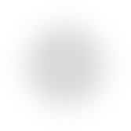
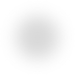
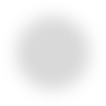
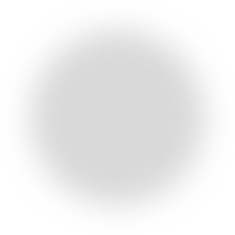
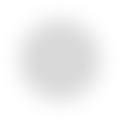
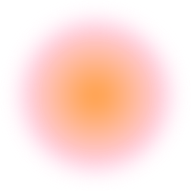
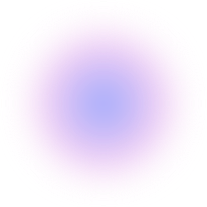
UNNC Campus-Community Relationship — Current State
Public Kitchens
Campus Farm
Lawn
foreign
students
Business Street
Student Square
Ningbo Innovative Communities
Ningbo Traditional Communities
Surrounding Cities
Pop-Up Markets
Creative Spaces
Vegetable Markets
Student Activity Center
Chinese Students
UNNC Campus
Outside Communities
STRONG TIE
MODERATE TIE
Observation Findings
Key Insights
Design Challenge
How might food activities shift campus interactions from displaying cultural differences to experiencing shared community through taste?
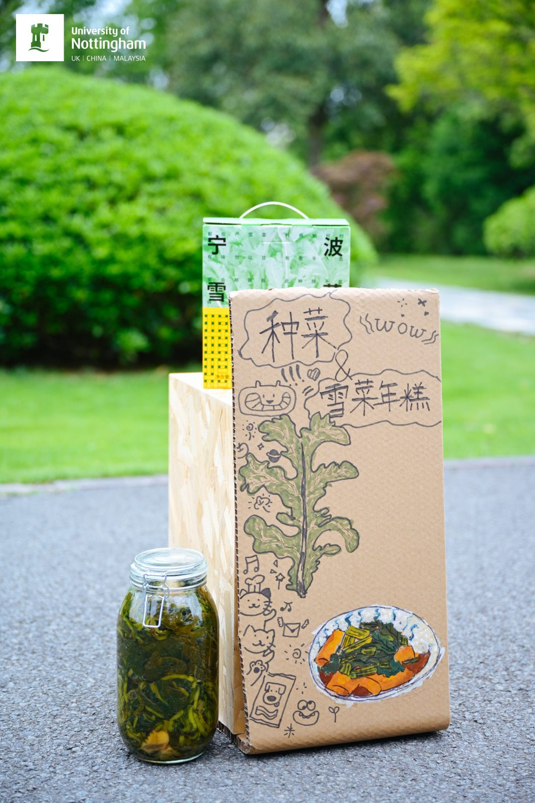
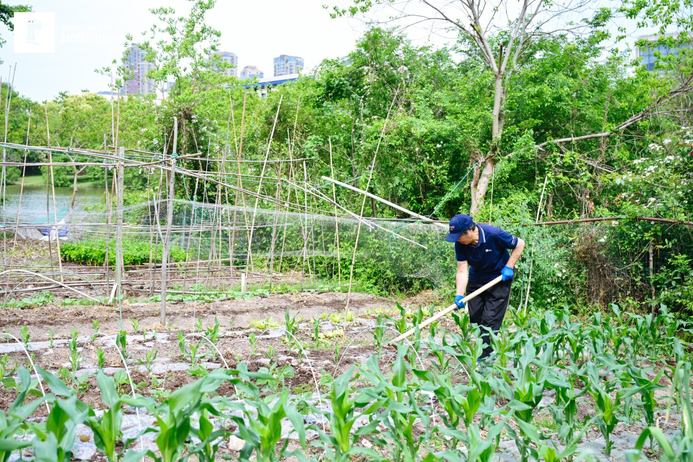
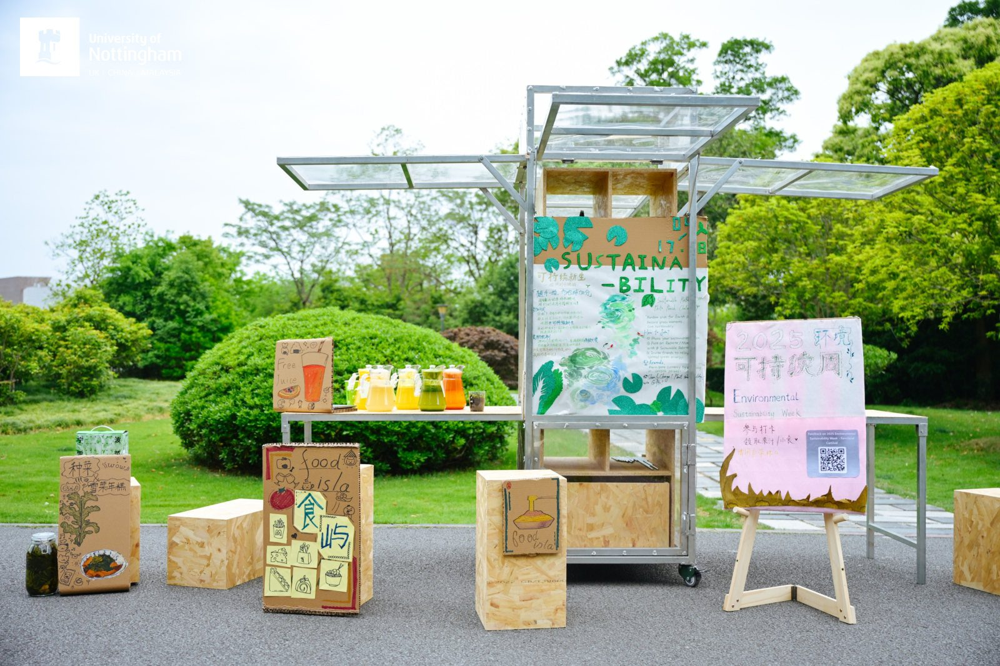